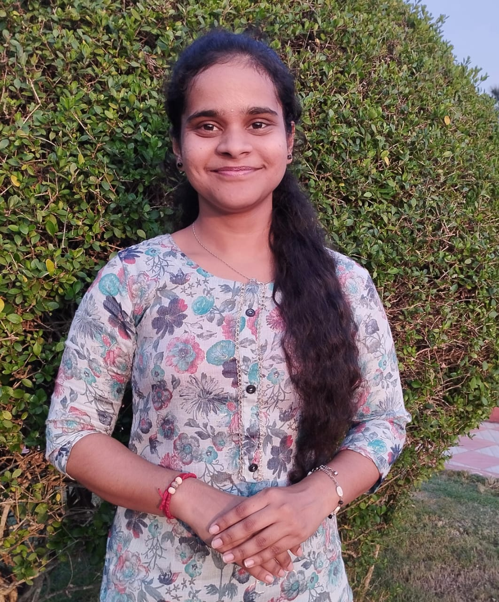

Find Helpers : Full-Stack Service Booking App (Ongoing)
- Role-based login, service requests, and MySQL database integration.
- Tech: HTML, CSS, JS, Node.js, Express.js, MySQL (React planned)
CSE - AI & DS Student | Passionate About Building Scalable Software
Final year CSE - AI & DS student with a passion for full-stack development and scalable software solutions. Always eager to learn and build impactful tech.
